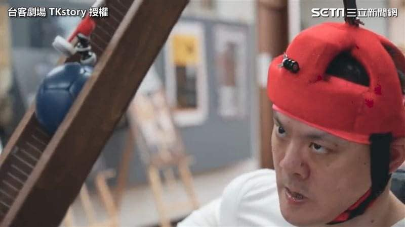
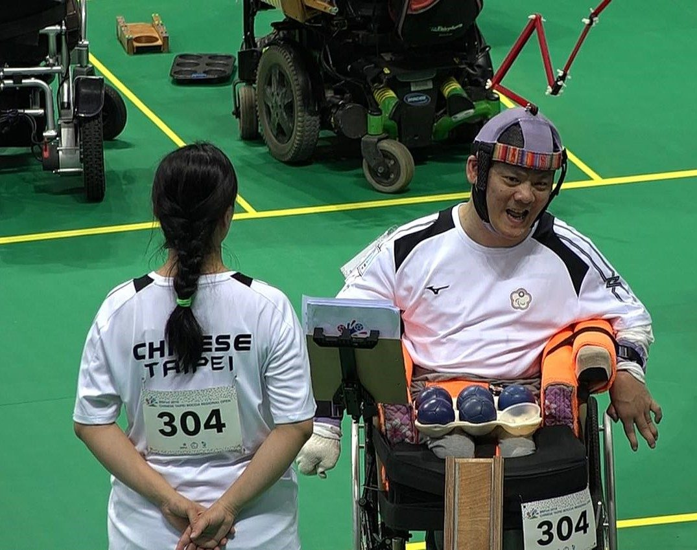
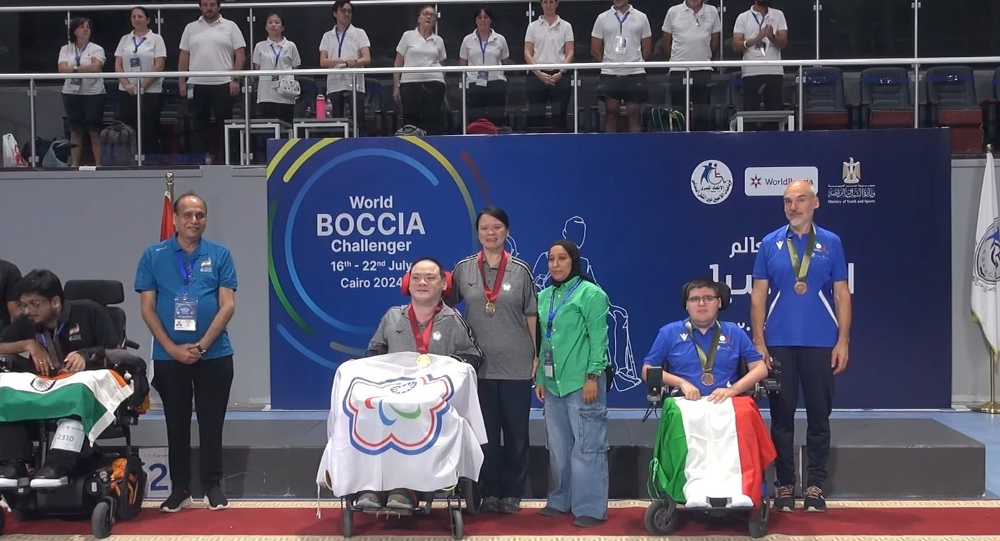
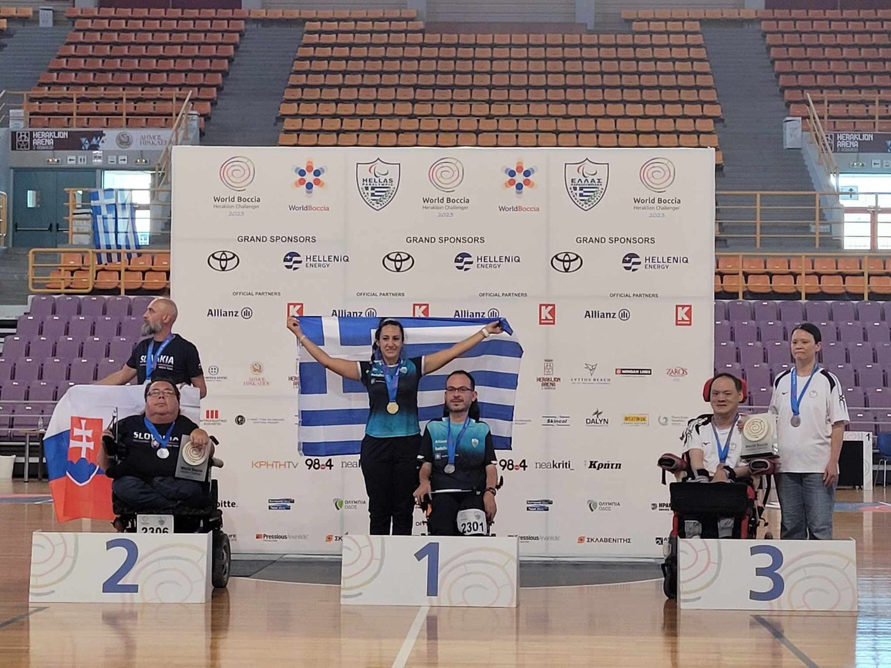

01我的故事
超越限制，實現自我！我是地板滾球選手 陳銘哲！
雖然我是重度多重障礙者，需要比一般運動選手克服更多的挑戰，但我始終懷抱著實現自我價值、為國爭光的夢想。我努力克服萬難，終於成為了台灣首位並唯一獲得 6 面國際地板滾球獎牌的選手！
這份榮耀包含雙人賽 2 金，以及個人賽 2 金、1 銀、1 銅的成績。繼 2023 年底為台灣拚得睽違多年的國際賽獎牌後，我更在 Cairo 2024 World Boccia Challenger 贏得了台灣首面國際個人賽金牌，並在 Astana 2025 World Boccia Challenger 再次獲得 1 面國際賽金牌。目前世界排名 16 名。
2014年開始學習地板滾球，才發現生活無法自理的我，居然可以透過輔具，在球場上成為自己的主宰。縱使資源匱乏，但我堅持不懈，珍惜每次練球及學習機會。
期許自己繼續在地板滾球的世界舞台，奮鬥出更佳成績，展現來自台灣的生命力。



